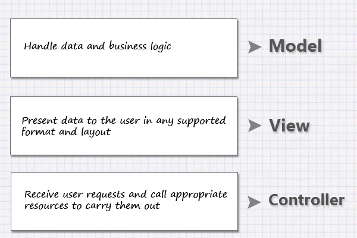

PHP
Урок 1️⃣7️⃣
Фреймворк
Фреймворк — программная платформа, определяющая структуру программной системы; программное обеспечение, облегчающее разработку и объединение разных компонентов большого программного проекта.
Инверсия управления
Inversion of control (IoC)

MVC
Model-View-Controller

MVC
Установка Laravel
# установим Laravel-installer
composer global require "laravel/installer"
# создаем новый проект guest-book
laravel new guest-book
# запускаем сервер
php artisan serve
Миграции

Artisan
# посмотреть список команд
php artisan
# создать новую миграцию AddPostsTable
php artisan make:migration add_posts_table
# заполнить базу тестовыми данными
# (выполнит код из database/seeds)
php artisan db:seed
# выполнить миграции
php artisan migrate
Структура проекта
# контроллеры
app/Http/Controllers/
# по умолчанию модели находятся в
app/
# роутинг, привязка контроллеров к ресурсам
# (выполнит код из database/seeds)
routes/
# шаблоны blade
resources/views/
# файлы миграций, генерация тестовых данных
database/migrations/
database/seeds/
Снова GIT ☺️
Пример локального использования
# создать пустой репозиторий
git init
# добать все файлы, которые есть в проекте
git add .
# создаем первый коммит с комментарием Initial commit
git commit -m'Initial commit'
# делаем какое-то изменение в README.md
# смотрим, что было изменено
git diff
# смотрим, какие файлы были изменены
git status
# выбираем файлы, которые попадут в коммит
git add README.md
# создаем новый коммит
git commit -m'Update readme'